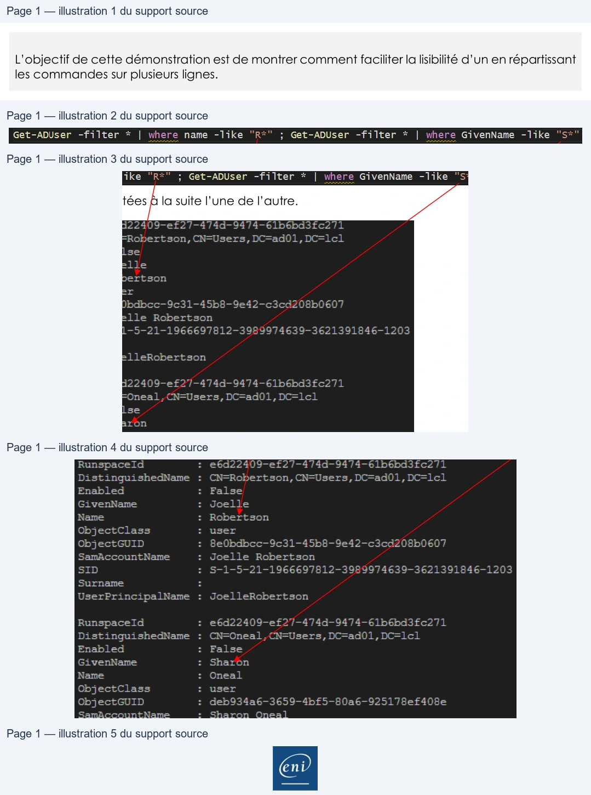

Transcription du document du Drive TSSR. La mise en forme est adaptée au Web ; les compléments IA du portail sont présentés séparément.
Initiation à PowerShell
Démonstration 04 du module 5
L’objectif de cette démonstration est de montrer comment faciliter la lisibilité d’un en répartissant
les commandes sur plusieurs lignes.
•
A la différence du Pipe, le « ; » va permettre d’enchaîner des commandes sur une ligne sans
interaction entre les commandes.
Les deux commandes sont exécutées à la suite l’une de l’autre.
Page 1/1
© ENI – Tous droits réservés
Get-ADUser
-filter
*
|
where name
-like
"R
;
Get-ADUser -filter
*
|
where GivenName
-like
"S
Runspaceld
:
ebd22409-ef27-474d-9474-6lbebdste271
DistinguishedName
:
CN=Robertson, CN-Users, DC=ad01, DC=lel
Enabled
:
False
GivenName
:
Joelle
Name
:
Robertson
ObjectClass
:
user
Object GUID
:
BeQbdbcc—9c31—-45b8-9e42-c3cd208b0607
SamAccountName
:
Joelle
Robertson
Surname
z
UserPrincipalName
:
JoelleRobertson
Runspaceld
:
e6d22409-ef27—-474d-9474-61b6bd3fc271
DistinguishedName
:
CN-Oneal,CN-Users, DC=ad01,DC=1c1
Enabled
:
False
GivenName
:
Sharon
Name
:
Oneal
ObjectClass
:
user
SanhccountNane
-
Sharon
Ones
